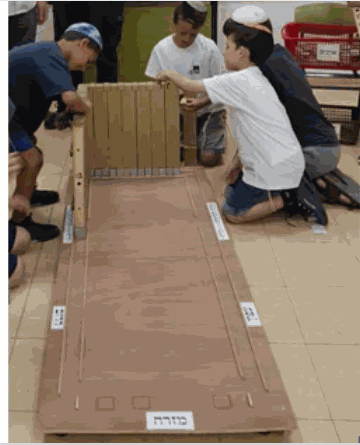
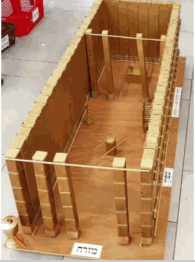
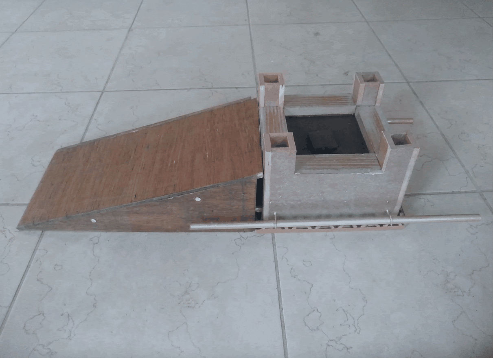
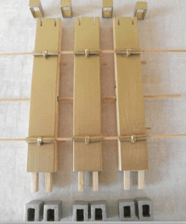
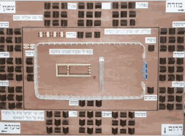
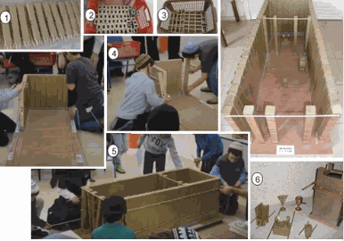
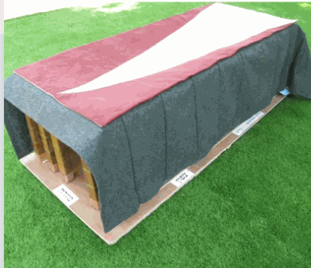
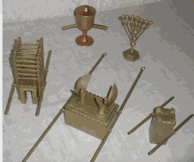
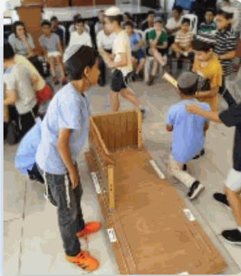

ב"לגעת במשכן" אנחנו מציעים פעילויות והרצאות לבתי ספר וקהילות, באמצעות בניית דגם המשכן ע"י הילדים והכנסת כלי הקודש לדגם - חוויה לימודית חיה ומוחשית.
המלמדים את פרשות המשכן מתקשים לעיתים להסביר את כל הפרטים שבמשכן, ולהמחיש את מבנהו. בתורה מתוארים מרכיבי המשכן אבל לא תמיד ברור איך הם התחברו, וזה לא פשוט לילדים הנתקלים לראשונה במרכיבי המשכן.
אם נוכל ממש לגעת במשכן, לראות ולבנות אותו, נוכל להבין יותר.
אנחנו הכנו דגם של המשכן המיועד להרכבה ע"י הילדים, וכאשר הילדים מרכיבים בעצמם את הדגם הגדול שאנחנו מביאים לבית הספר, הם רואים ומבינים איך הפריטים מתחברים. אכן הילדים מרכיבים את הדגם בשמחה ובהתלהבות.



הדגם המורכב עם כלי הקודש בתוכו
מידות דגם המשכן לעומת המשכן האמיתי:
מידות המשכן האמיתי: 30 אמות אורך, 10 אמות רוחב, 10 אמות גובה.
הדגם עשוי עץ וצבוע זהב, הדגם נבנה על גבי משטח עם גלגלים כך שניתן לסובב ולהראות את הדגם מכל צדדיו.
מה אפשר לראות בדגם המשכן:
המרכיבים של הקרשים:
לפני שהילדים מרכיבים את קרשי המשכן, הם מתבקשים להתבונן בקרש ולהבין את מבנהו.


מקומו של המשכן בישראל
בתחילת הפעילות, מוצג דגם קטן של מחנה ישראל במדבר כשהמשכן נמצא במרכז, בהיות המשכן מרכזו של עם ישראל.

במהלך הפעילות כל ילד לוקח קרש מקרשי המשכן:
וכאשר המשכן מורכב, הילדים משחילים בו את הבריחים השונים (5) ובהמשך יוכנסו גם כלי הקודש (6).

לאחר הרכבת הקרשים נפרוס עליהם את כיסויי המשכן:
עוד בפעילות:

במהלך הפעילות ניתן דעתינו לדעות השונות לגבי הגובה של מזבח הנחושת, גגו ואופן נשיאתו ע"י הלווים.
בכל שלב בפעילות, נסביר על הפריטים השונים. ניתן הסבר והדגמה לדעות השונות לגבי: צורת הקרשים, מיקום העמודים, מידות הכלים, אופן ציפוי הזהב וכו'.
לדוגמה, הדגמת הקרשים ה-"משולשים" לשיטת רבי יהודה לעומת הקרשים ה-"מלבניים" לשיטת רבי נחמיה.
בפעילות נחלק לילדים דפי מקורות מפרשות המשכן, ואותם נסביר.

אנו מציעים פעילות חווייתית ואטרקטיבית זו לילדים בבית הספר שלכם.
לילדי בית ספר יסודי הפעילות כוללת את הרכבת דגם המשכן ע"י הילדים, משך הפעילות: כשעה (60 דקות).
על יסודי/ צוותי מורים ילמדו על המשכן על בסיס הדגם המורכב מראש.
במשכן 48 קרשים. בהרכבת דגם המשכן, אנחנו מעמידים קרשים ראשונים והילדים מוסיפים 45 קרשים. בכדי לאפשר לכל ילד לשים את הקרש שלו במשכן, רצוי שבפעילות ישתתפו עד 45 ילדים.
כשיש הרבה משתתפים כדאי להתפצל לשתי קבוצות, שיעברו שתי פעילויות.
לפחות שעה (בהתאם לקצב הבנייה והתעניינות הילדים), רצוי להקצות שני שיעורים רצופים כדי לא לדלג על נושאים חשובים.
צריך להשאיר רחבה של 3x3 מטרים להרכבת הדגם, וכדי שנוכל לסובב אותו במהלך ההדגמה.
"הפעילות הייתה פשוט מדהימה! הילדים חוו את החומר הנלמד בצורה מוחשית ומרתקת. הרכבת הדגם עזרה להם להבין דברים שהיה קשה להסביר בכיתה. מומלץ בחום לכל בית ספר."
"חוויה בלתי נשכחת לילדים. הגישה המקצועית, ההסברים הברורים וההתלהבות של המדריך סחפו את כולם. הדגם מושקע מאוד וההקפדה על הפרטים מרשימה."
"מומלץ בחום, מבחינתי אי אפשר להעביר את החומר בלי פעילות שכזאת. הילדים מאוד התרגשו, נהנו והתענגו מכל רגע."
לפרטים והזמנות, נשמח לעמוד לרשותכם באחת מהדרכים הבאות: